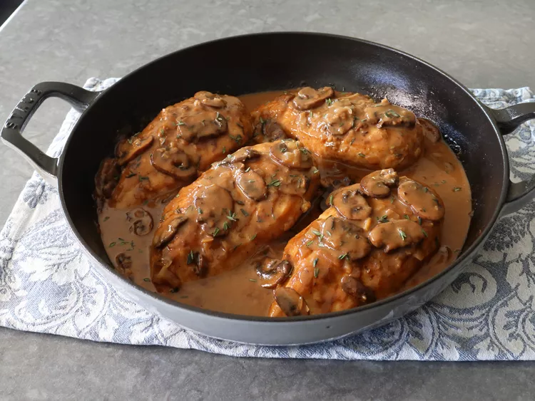

This champagne chicken uses—you guessed it!—champagne—to turn ordinary skinless, boneless chicken breasts into a truly amazing dish with a world-class mushroom pan sauce. These old-school-type pan sauces are classic for a reason. The depth of flavor is impressive.
Season chicken with salt on both sides.
Heat olive oil over high heat in a nonstick pan large enough to hold the chicken breasts in a single layer, and cook chicken on both sides until lightly browned, 3 to 4 minutes per side. While the first side is browning, season tops of breasts with black pepper and cayenne to taste.
Once both sides are browned, turn off heat, and transfer chicken to a plate, and reserve. Chicken can be transferred into the refrigerator until needed.
Melt butter in the pan over medium-high heat, then add mushrooms and a pinch of salt to the pan cook, stirring occasionally, until the mushrooms begin to brown.
Stir in shallots and garlic, and cook, stirring, until shallots turn translucent, 3 to 5 minutes. Sprinkle in flour and cook, stirring, until the flour disappears and starts sticking to the bottom of the pan, about 1 minute.
Pour in champagne and use a spatula to scrape any caramelization off the bottom of the pan. Let mixture simmer until the champagne has reduced by about half, and has thickened enough that the trail left by a spatula dragged across the bottom of the pan takes a few seconds to fill in, 5 to 10 minutes.
Stir in tomato paste, fresh thyme, and chicken broth, and wait for the sauce to return to a simmer. Stir in cream, and let the sauce cook until reduced and thickened enough to coat a spoon, about 10 minutes. Reduce heat to low.
Stir in balsamic vinegar, and return reserved chicken to the pan. Finish cooking the chicken by simmering gently in the sauce, turning over and basting every few minutes, until an instant-read thermometer inserted near the center maintains a temperature of 150 degrees F (66 degrees C) for 3 to 4 minutes. The time it will take to complete cooking the chicken breasts will vary, but internal temperature is a sure guide to doneness.
Taste for seasoning, and serve chicken immediately with sauce spooned over the top.